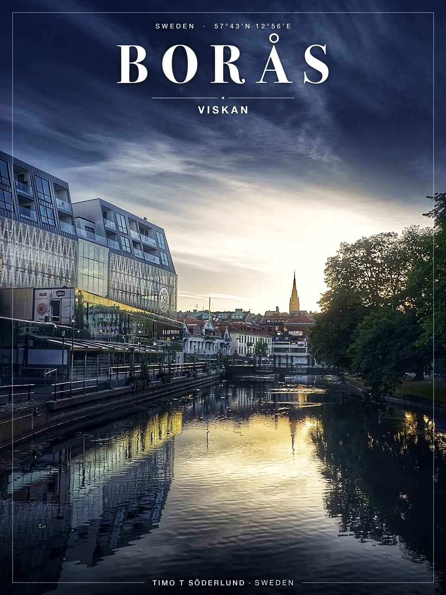

Viskan · Dawn
Viskan River & Dawn Clouds · Borås, Sweden
English
First light breaks over the rooftops of central Borås, igniting sweeping dawn clouds in burnished gold and deep Nordic sapphire above the Viskan river. As the city wakes, the riverfront turns into a quiet mirror of color and light. Photographed and graded by Timo T Söderlund, this edition of Borås Poster Project 2026 captures Boras, Sweden at its most luminous.
Svenska
Det första gryningsljuset bryter fram över taken i centrala Borås och färgar himlens moln i varmt guld och djup nordisk safirblå över Viskan. Medan staden vaknar förvandlas Viskan till en stilla spegel av färg och ljus. Fotograferad och graderad av Timo T Söderlund för Borås Poster Project 2026.
Photographer & Edition: Timo T Söderlund · Borås, Sweden (2026)